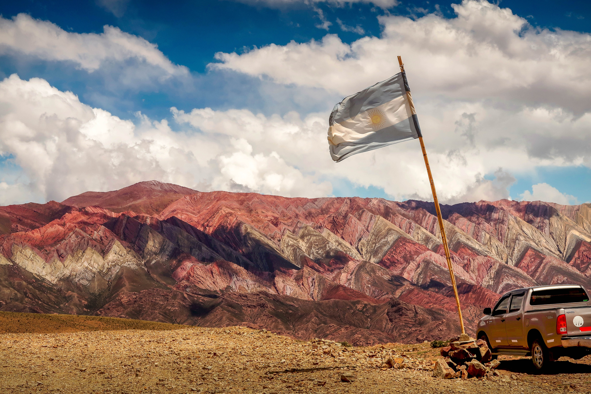

Argentinien (spanisch Audio-Datei / Hörbeispiel Argentina?/i [aɾxenˈtina]) ist eine Republik im Süden Südamerikas. Sie grenzt im Westen an Chile, im Norden an Bolivien und Paraguay, im Nordosten an Brasilien und Uruguay und wird im Osten durch den Atlantischen Ozean begrenzt. Der Landesname leitet sich von der lateinischen Bezeichnung für Silber – argentum – ab und stammt aus der spanischen Kolonialzeit, als man hier Edelmetalle zu finden hoffte. Bis zu seiner Unabhängigkeit 1816 war es Teil des spanischen Kolonialreiches. Politisch ist Argentinien eine präsidentielle Bundesrepublik, in der die einzelnen Provinzen weitreichende Kompetenzen haben. Laut der argentinischen Verfassung gelten neben República Argentina auch Provincias Unidas del Río de la Plata und Confederación Argentina als offizielle Bezeichnungen Argentiniens.[6] Mit einer Fläche von knapp 2,8 Mio. km² ist Argentinien der achtgrößte Staat der Erde und der zweitgrößte des südamerikanischen bzw. der viertgrößte des amerikanischen Doppelkontinentes. Wegen seiner großen Nord-Süd-Ausdehnung hat das Land Anteil an mehreren Klima- und Vegetationszonen. Im Hinblick auf die Einwohnerzahl steht es mit rund 45 Millionen Einwohnern in Südamerika an dritter (nach Brasilien und Kolumbien) und in ganz Amerika an fünfter Stelle. Etwa ein Drittel der Bevölkerung konzentriert sich im Ballungsraum der Hauptstadt Buenos Aires, die als bedeutendes Kulturzentrum Amerikas gilt, in dem unter anderem der Tango Argentino seinen Ursprung hat. Weitere Ballungszentren bilden die Städte Córdoba, Rosario, Mar del Plata und Mendoza. Große Teile des trockenen und kalten Südens sind dagegen nur sehr dünn besiedelt.